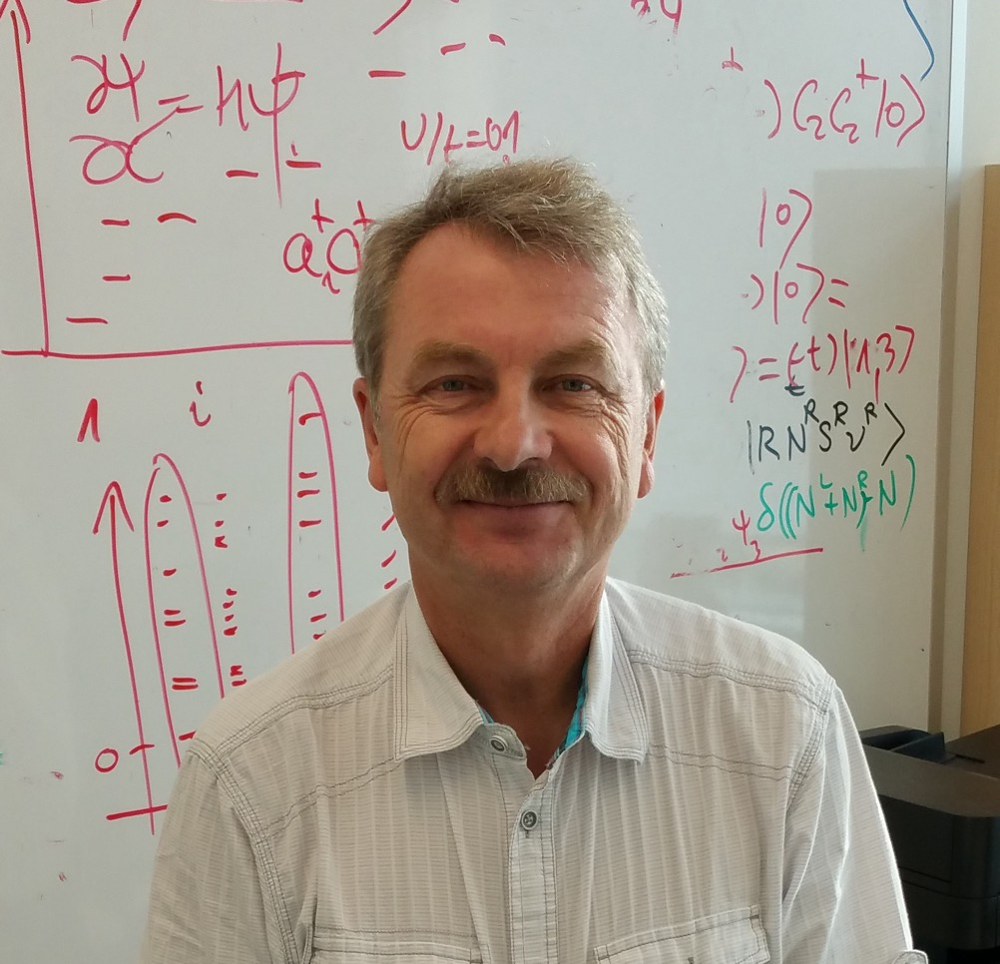

Dr. Pawel Hawrylak
Group Leader
Professor of Physics
University Research Chair in Quantum Theory of Materials, Nanostructures and Devices (2014-2024)
PhD, Condensed Matter Theory, University of Kentucky (1984)
Fellow, Royal Society of Canada (2006) • Fellow, American Physical Society (1996)
Brockhouse Medal, Canadian Association of Physicists (2002)